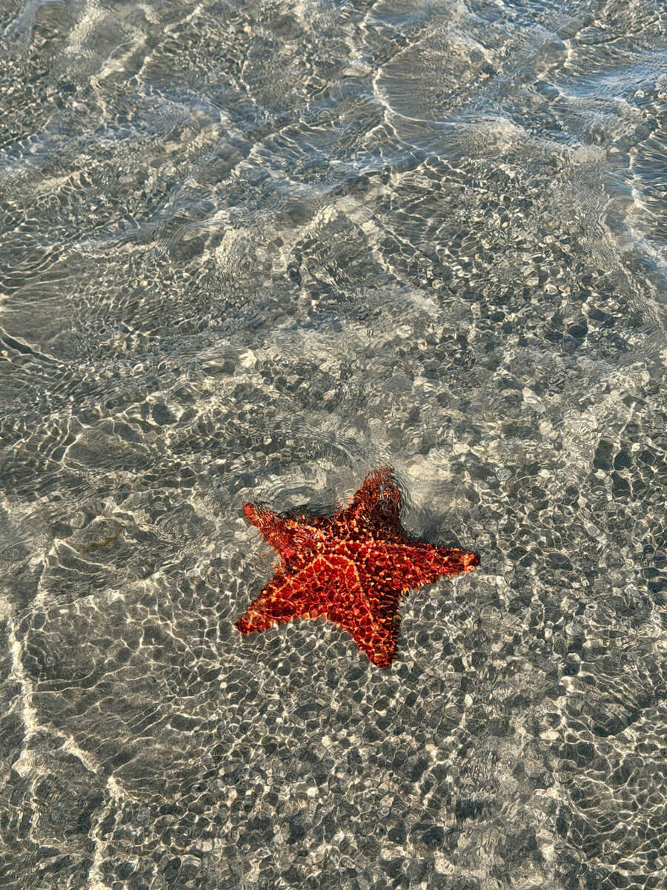

Starfish are a type of invertebrate found in the ocean. Their limbs are all conected by a single nervous system. Whenever a limb is removed, a new one will grow in its place, and sometimes even a new starfish will grow from said limb. They eat their prey by throwing up their intestines and injecting the prey with enzymes.